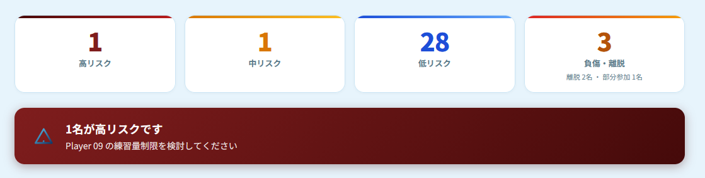

「本当に効くのか？」に、数字で答える。
Odonataの分析・プロダクトは、大学トップレベルの競技現場での実証と、学術研究の上に立っています。 数字は、条件と注記を添えてお見せします。
実証成果
数字は盛りません。条件と限界も、セットでお伝えします。
従来指標（ACWR）と、何が変わったのか
傷害の予兆を捉える指標として、これまで広く使われてきたのが ACWR（急性:慢性 作業負荷比）です。ACWR は、直近の負荷がこれまでの平均に対してどれだけ急に増えたか、という単一の比率で危険を判定します。
| 指標 | 何を表すか | ACWR（従来） | Odonata |
|---|---|---|---|
| Precision（的中率） | 高リスクと判定した選手のうち、実際に傷害が起きた割合 | 約5% | 約70% |
| Recall（捕捉率） | 実際に起きた傷害のうち、事前に予兆を捉えられた割合 | 約20% | 約20% |
見逃しの少なさ（Recall）は従来と同じ水準を保ったまま、的中率（Precision）を約5%から約70%へ引き上げました。
これは、注意すべき選手として挙がった10人のうち、これまで実際に傷害が起きたのは1人以下だったのが、7人になったということです。
この数字は、どう計算されているか
検証対象100人の内訳
- 高リスクと判定し、実際に傷害が起きた（的中）：7人
- 高リスクと判定したが、傷害は起きなかった（空振り）：3人
- 低リスクと判定したが、傷害が起きた（見逃し）：28人
- 低リスクと判定し、傷害が起きなかった（正しく低リスク）：62人
Precision ＝ 7 ÷ (7 + 3) ＝ 約70%
Recall ＝ 7 ÷ (7 + 28) ＝ 約20%
- ※ 筑波大学蹴球部の 2022〜2025年のデータを用いた検証結果です。
- ※ 対象は筋肉系・非接触靭帯系・オーバーユース系（疲労骨折など）の傷害に限ります。
- ※ 同一モデルでは、判定基準の調整により Precision と Recall は一般にトレードオフの関係になります。一方を高くすると、もう一方が下がりやすくなります。
- ※ 分析結果・モデル精度は、データ量・データ品質・対象チームの環境により異なります。各クラブのデータで検証・調整を行う前提です。
どうやったか
統合する
GPS・主観コンディション・スケジュール・メディカル記録を1つのデータセットに統合し、200以上の観点から特徴量を生成しました。
モデルを個別に組む
傷害発生時との類似性を学習させ、チーム・選手固有の傷害リスク予測モデルを構築しました。
現場に実装する
分析を研究室に閉じず、選手・スタッフが毎日使えるWebアプリとして実装。日々のリスクスコアと要因分解を返します。
判断の材料として使う
練習負荷の調整・起用の検討・選手との対話の材料として運用。決めるのはスタッフで、AIはもう一つの目です。
データはあるのに、つながっていなかった。
大学トップレベルの競技環境である筑波大学蹴球部では、GPS・コンディション報告・メディカル記録という素材は揃っていました。しかしそれぞれが別の場所に保存され、同じ選手を横断して読み解く仕組みがありませんでした。2026年6月、この状態から実証を開始しています。

研究基盤
Odonataのメンバーには、筑波大学の博士課程在籍者、臨床心理士・公認心理師、理学療法士が含まれます。
心理ネットワークアプローチ
心理状態を症状・要因の相互作用ネットワークとして捉える研究知見を、コンディション分析にそのまま応用しています。
脳科学・認知科学・スポーツ科学
知覚・意思決定・運動制御の研究バックグラウンドが、「現場の判断を支える」というプロダクトの設計思想を支えています。
研究を直接、実装する体制
研究知見の実装を外注せず、研究者自身が設計・開発。論文からピッチまでの距離が、圧倒的に近いチームです。
このページは、更新され続けます。
導入クラブでの検証結果は、条件・注記とともに順次公開していきます。